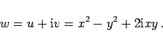
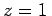

Inhalt Index DeskTop Bronstein

 Funktionentheorie Funktionen einer komplexen Veränderlichen Konforme Abbildung Einfachste konforme Abbildungen
Funktionentheorie Funktionen einer komplexen Veränderlichen Konforme Abbildung Einfachste konforme Abbildungen


Die konforme Abbildung mittels der quadratischen Funktion
| w=z2 | (14.14a) |
und als Funktion von x und y
|  | (14.14c) |
Aus der Darstellung (14.14b) in Polarkoordinaten ist ersichtlich, daß bereits die obere Hälfte der z-Ebene auf die volle w-Ebene abgebildet wird, d.h., die gesamte z-Ebene geht in die zweifach überdeckte w-Ebene über.
Die Darstellung in kartesischen Koordinaten zeigt, daß die Koordinaten der w-Ebene  und
und  aus den in der z-Ebene zueinander orthogonalen Hyperbelscharen x2-y2=u und 2xy = v hervorgehen (s. Abbildung).
aus den in der z-Ebene zueinander orthogonalen Hyperbelscharen x2-y2=u und 2xy = v hervorgehen (s. Abbildung).
Fixpunkte dieser konformen Abbildung sind z = 0 und . An der Stelle z = 0 ist die Abbildung nicht konform.